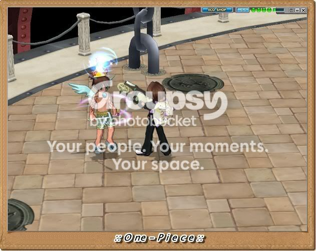

อันนี้เป็นภาพการทดสอบสกิล Dead March โดยทดสอบกับแอสสาย vit อจิ โซลครบนะครับนะครับ แต่ตัวพระมีแค่โซลชาแมนสิงครับ magพระ65ไม่รวมค่าโบนัสครับ (น้อยนิด =w=)
รูปแรก dmg ที่ได้รับโดยไม่กด zen นะครับ (กดสปีด) (รูปนี้ดูดีๆจะเห็นสถานะใบ้+หลับ)

รูปนี้ให้ชาแมนกดzen (กดสปีด)

รูปนี้ขอแรงคาบามากด Evil Soul ครับ แต่ว่าก้ไม่เป็นผลต่อสกิลครับ (ในไกด์ของกระทู้นี้หน้า22ได้บอกว่า สามารถใช้ร่วมกับ Evil Soulได้ จริงๆคือไม่ได้ครับ)

รูปนี้แสดงสถานะด้านลบโดยประมาณครับ รูปแรกๆลืมซูมภาพ =w=

จากการทดสอบแล้วพบว่าสถานะที่ติด ได้แก่ Sleep,Confuse,Stun,Silent,Slow ครับ ซึ่งโดยรวมแล้วจะออกทีละ2-3สกิล
- สกิล Dead March นั้นถือว่าเป็นสกิลที่ใช้เวลาร่ายพอสมควรเลยครับ ขนาดผมdex60+ ยังถือว่าร่ายช้าเลย แต่สามารถร่นเวลาลงได้ด้วยสกิล Musical Mastery ครับ ใครที่คิดจะโอนสกิลนี้ไปเล่นในคลาสDruid ถือว่าต้องเอาmusical masteryไปด้วยเลยครับ ระยะเวลาการร่ายหลังมีสกิล musical mastery ก็พอๆกับท่า Attract March ครับ
*** สามารถใช้ร่วมกับสกิลดีดเช่น samba ได้ ***